日常挑戰
定點GO 關注市民在日常通勤中遇到的大眾運輸不便、停車困難與缺乏駕駛執照等問題。這些限制不只增加生活負擔，也影響工作效率與生活品質。
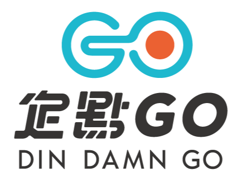
SERVICE DESIGN · MOBILE APP · 2026
定點GO 以固定時段、固定地點為核心，讓使用者提前安排接送需求、掌握報價，減少每天重新叫車與等待的不確定。
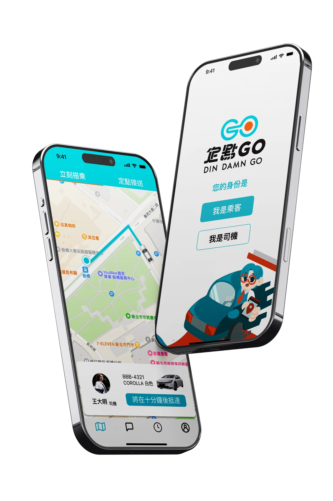
01 / CREATIVE CONCEPT
定點GO 關注市民在日常通勤中遇到的大眾運輸不便、停車困難與缺乏駕駛執照等問題。這些限制不只增加生活負擔，也影響工作效率與生活品質。
因此，我們打造更便利、更經濟且可預期的服務平台，為每天重複發生的移動需求，提供一個能夠提前安排的選擇。
02 / SERVICE POSITIONING
使用者先選擇固定的乘車需求，平台媒合可服務的私人司機並提出報價。長期固定時段的安排，能降低臨時叫車、提早等車與跳表計費帶來的時間和費用成本。
03 / HOW IT WORKS
04 / PRODUCT EXPERIENCE
介面集中呈現固定行程、司機媒合與報價資訊，讓使用者不需要反覆確認，也能掌握下一次接送。
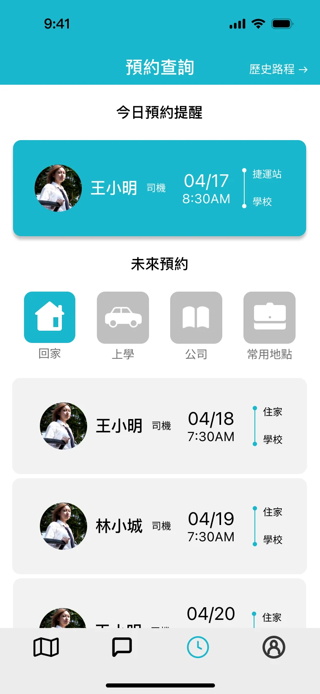
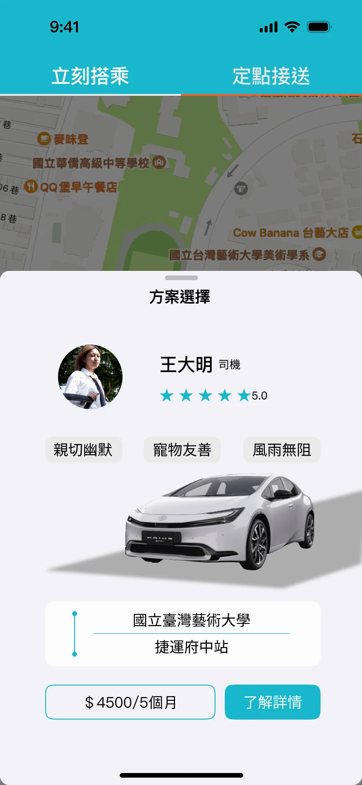
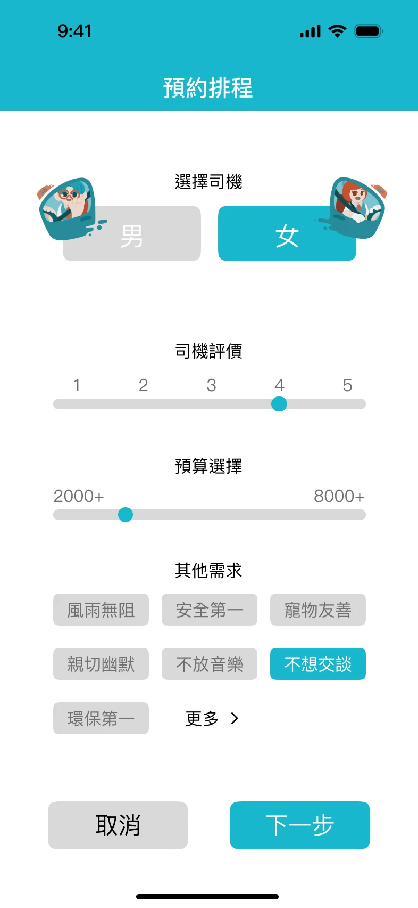
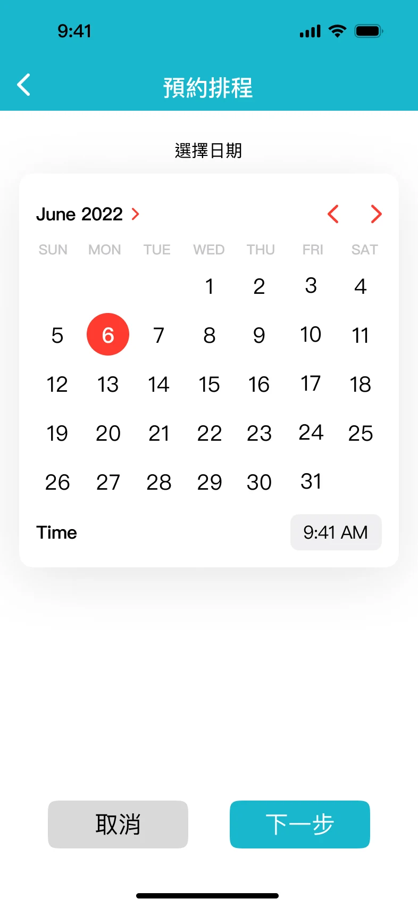
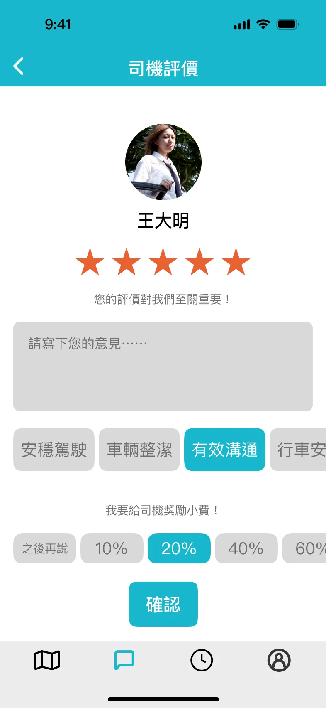
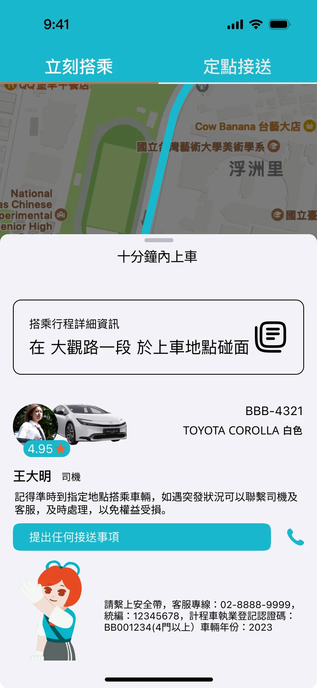
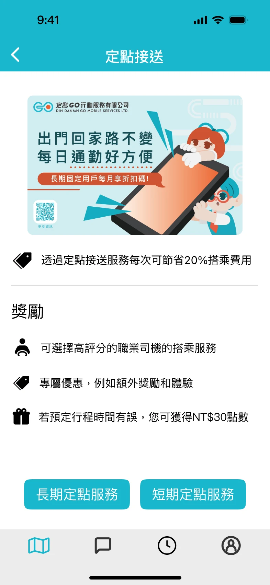
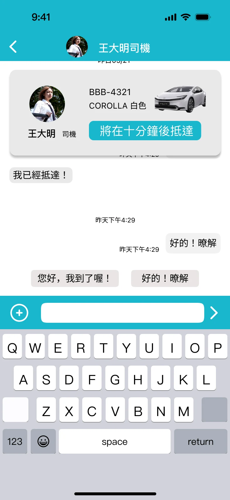
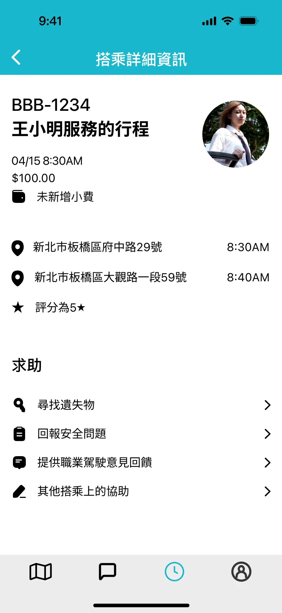
BOOKING · MATCHING · ARRIVALAPP EXPERIENCE / 01
05 / BRAND EXPERIENCE
品牌識別延伸至名片、信紙與辦公應用，讓數位服務與實體接觸點維持一致、可信賴的印象。
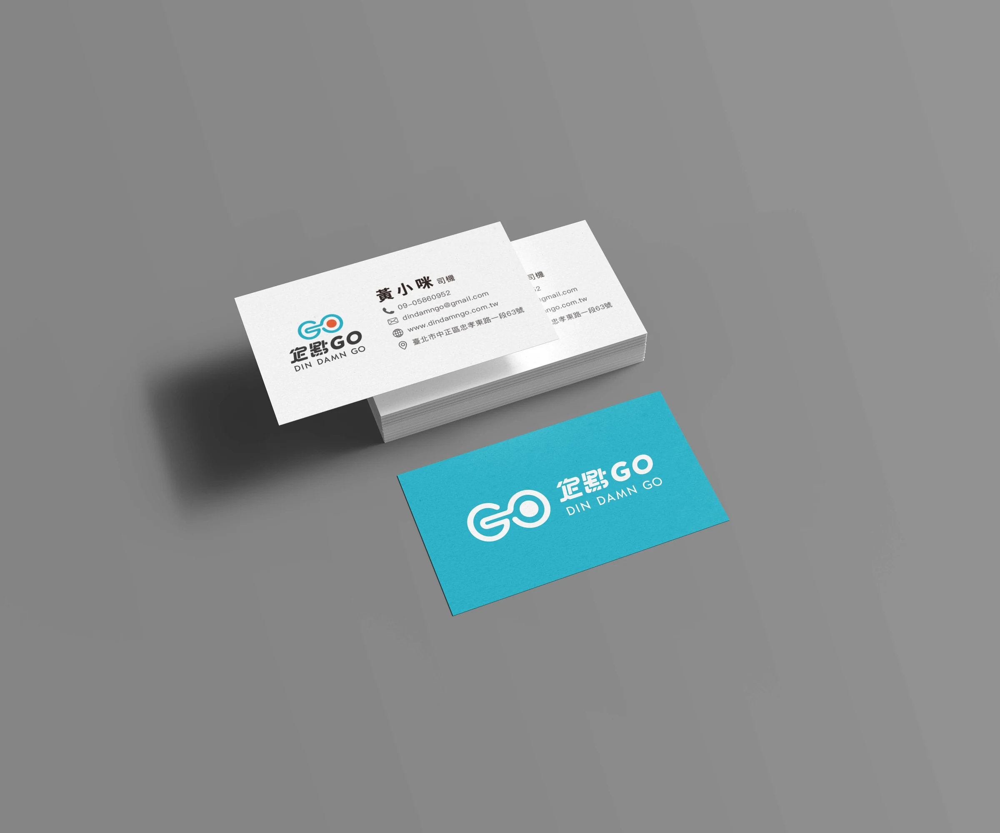
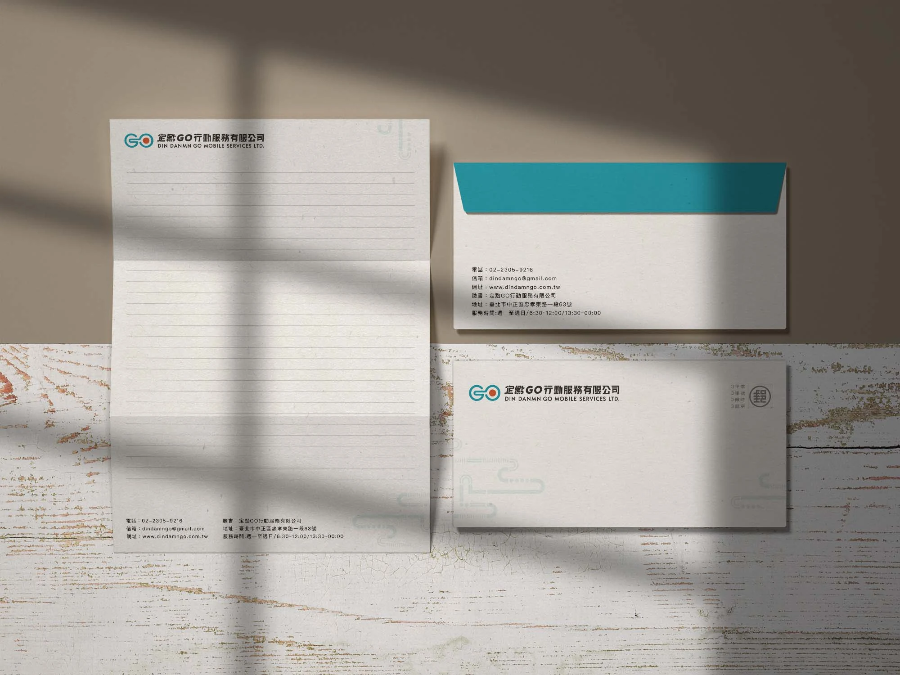